Thee sitting careless on a granary floor,
The superfluous is very necessary.
 Voltaire
Voltaire
| You use dynamic palettes to store objects for later reuse. No writing or compilation of code is required, just a simple operation with the mouse. You can store specially configured objects on dynamic palettes, and you can store multiple objects along with their connections.
Working with Interface Builder |
5
Using Dynamic Palettes
Creating and saving dynamic palettes
Storing View objects on dynamic palettes
Arranging objects on dynamic palettes
Storing top-level objects on dynamic palettes
Putting connected View and top-level objects on dynamic palettes.
Managing palettes
| Who hath not seen thee oft amid thy store? Thee sitting careless on a granary floor,
The superfluous is very necessary. |
| CREATING AND SAVING DYNAMIC PALETTES |
| To create a palette, choose New from the Palettes menu. | ||
| Save a palette by choosing the Save command from the Palettes menu. |
| To create a new dynamic palette, choose the New command from the Palettes menu (the Palettes menu is in the Tools menu). An empty palette appears in the Palette window.
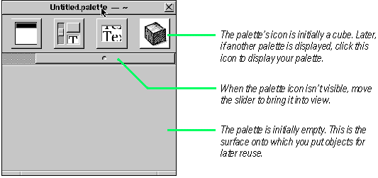 As with the standard Application Kit palettes, you can choose an existing dynamic palette by clicking its icon in the Palette window (when created, dynamic palettes have the generic cube icon). To use an object on a dynamic palette, follow the same procedure as for objects on the standard palettes: Drag the object from the palette and drop it on an appropriate surface. You must save your dynamic palettes. If you do not save a palette after you create it, you lose it when you quit Interface Builder. Choose the Save command to save dynamic palettes, but the Save command from the Palettes menu, not the Document menu. 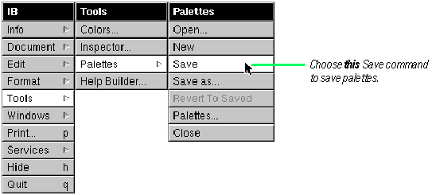 You can customize the icon for your dynamic palette. The last task in this chapter, "Managing Palettes," tells you how to do this and also describes how to remove and unload palettes in Interface Builder. Interface Builder brings up the Save panel, allowing you to designate a name to save the palette under. 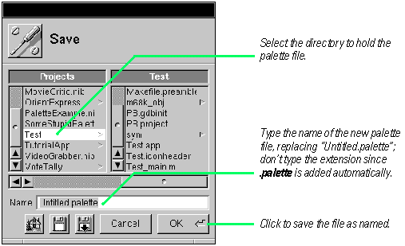
Tools for Interface Crafters: Static and Dynamic Palettes A palette is a special View that holds one or more reusable objects. You can add these objects to your application's interface using the drag-and-drop technique. There are two types of palettes: static and dynamic. To the user, they seem identical, but the differences are many. Static palettes are built as a project and have code defining their objects; dynamic palettes include no special code--they're unique configurations of (mostly) standard kit objects. Consequently, static palettes must be compiled, but you can create dynamic palettes on the fly, without writing and compiling code. Objects on static palettes can have inspectors and editors, which dynamic-palette objects cannot have. You usually create a static palette as a way to distribute your objects--and the logic informing these objects' behavior--to potential users. Many developers of commercial NEXTSTEP objects make use of static palettes as a distribution media. Creating static palettes (and their inspectors and editors) is a more complex process than creating dynamic palettes, but the resulting product has more value added to it. Dynamic palettes are a great convenience. You can save collections of your objects, with or without their interconnections, to a dynamic palette at any time. You can save dynamic palettes and store them in the file system, just as you do with the traditional compiled palette. You can remove the palette from the Palette viewer and, when you need it again, just load it back into Interface Builder. The possible practical uses of dynamic palettes are numerous You can use them to: |
| Store collections of often-used View objects configured with specific sizes and other attributes. | ||
| Hold windows and panels that are replicated in your projects (such as Info panels). | ||
| Store versions of interfaces. | ||
| Keep interconnected objects as a template that you can later use as-is or modify for particular circumstances. For instance, you could store a group of text fields and their delegate, or a set of controls and their connections to a controller object |
| You can also use dynamic palettes for prototyping and group work. For instance, you could design an interface or a part of an interface, store the objects on a dynamic palette, and then mail the palette file to all interested parties.
|
| STORING VIEW OBJECTS ON DYNAMIC PALETTES |
| 1 | Configure one or more View objects. | |
| 2 | Select the objects. | |
| 3 | Alternate-drag them to the palette. |
| You can save any single View object or group of View objects to a dynamic palette so that you can use it or them again. The objects stored in this manner preserve the size and other attributes they have when you store them. First size each object to be stored and, through the Inspector panel, set its important attributes. If you are storing a group of objects, such as a set of controls within a box, make sure to position all objects in proper relation to each other. To store a single object, Alternate-drag it from the interface and drop it over the palette surface. For groups of objects, you can drag each object onto the palette individually, or you can make a multiple selection in the interface. For multiple selections, draw a selection rectangle around the objects, or Shift-click the objects in succession. 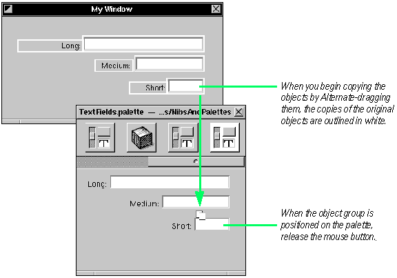 If the grouped objects are connected--say the three fields above are connected through the nextText outlet--those connections are copied also. If you have a custom View object connected to kit View objects, you can store these objects and their connections on a dynamic palette using this technique. When you reuse the View objects on stored a dynamic palette, be sure to drop them over the surface appropriate for them: a window or a panel. Tip: You can also copy View objects to a dynamic palette from the outline mode of Instances view. Once an object is on a palette, you can move it around the palette or remove it from the palette. See the next task, "Arranging Objects on Dynamic Palettes" for details. You can also store View objects that are connected to top-level objects. See "Storing Connected View and Top-Level Objects" later in this chapter for more information. |
| ARRANGING OBJECTS ON DYNAMIC PALETTES |
| To position a palette object, Alternate-drag it within the palette. | ||
| To remove a palette object, Alternate-drag it off the palette. |
| You can do two things to objects once they're on a dynamic palette: move them around the palette and delete them from the palette.
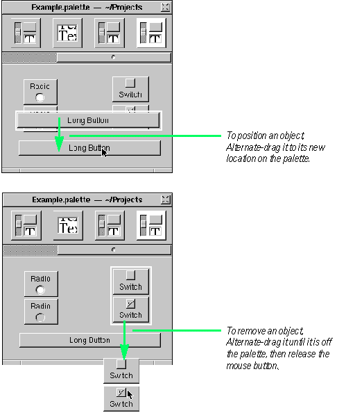 If you store an object on a dynamic palette and later discover that its size, connections, or attributes must be changed, you must: |
| Remove it from the palette. | ||
| Resize it, reconnect it, or reset its attributes. | ||
| Store it on the palette again (by Alternate-dragging it). |
| STORING TOP-LEVEL OBJECTS ON DYNAMIC PALETTES |
| 1 | In the Instances view, select one or more window, panel, or custom object. | |
| 2 | Alternate-drag them and drop them on a dynamic palette. |
| You can put custom objects, windows, and panels on dynamic palettes and reuse them again and again. You can store these top-level objects individually or as connected sets of objects. When you store a controller object and a window selected together, the connections between them are also stored on the dynamic palette. In addition, all connections between a window or panel and its Views are preserved as well as the connections among the Views themselves.
To store a single top-level object on a dynamic palette, Alternate-drag it from the Instances view of the nib file window and drop it over the palette. To store multiple, connected objects, make sure they're selected as a group first. 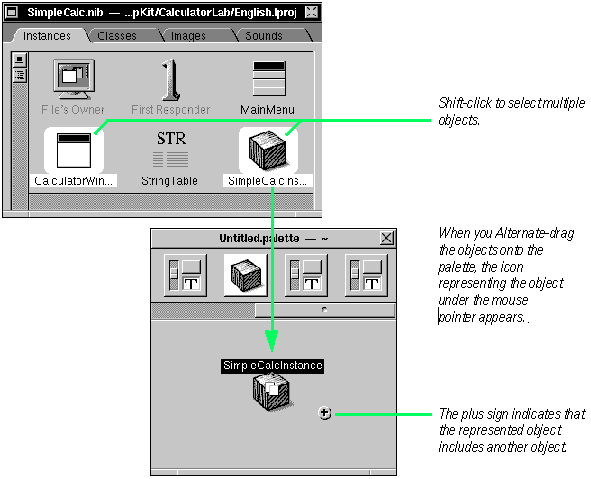 Tip: The above example shows objects being Alternate-dragged from icon mode of the Instances view. You can also store top-level objects on a dynamic palette by Alternate-dragging them from outline mode. When you drag the object or objects from the dynamic palette to add them to another nib file (or to duplicate them in the same nib file), make sure that the "surface" on which you drop the object (as represented by the icon) is compatible. 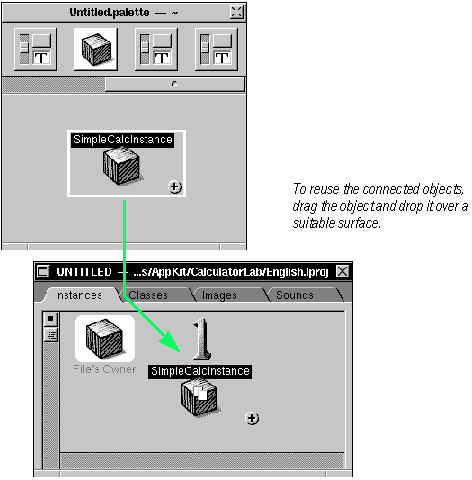 You'll know which surface is suitable by the icon representing the object. If it's a cube (custom object), you must drop it over the nib file window. If it's a window or panel, you can drop it anywhere on the screen, including over the nib file window. If you want, check the objects that you've added from the dynamic palette to verify that all connections are still in place. |
| PUTTING CONNECTED VIEW AND TOP-LEVEL OBJECTS ON A DYNAMIC PALETTE |
| 1 | In outline mode, select a connected top-level object and a View object. | |
| 2 | Alternate-drag the grouped objects to the palette. |
| There might be situations when you don't want to store an entire window with the custom object that manages that window's views. You just want to store the custom object and some of the window's views, or you want to store the window and only some its views. You can do this from outline mode of the Instances view.
For an example, here's how three grouped slider objects hooked up to a controller object (ImageController) look in outline mode when the connections are displayed. 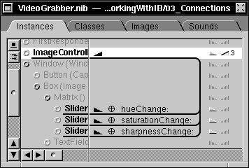 In outline mode you select the top-level object and View object by Shift-clicking them in succession. You can select only one View object and one top-level object. 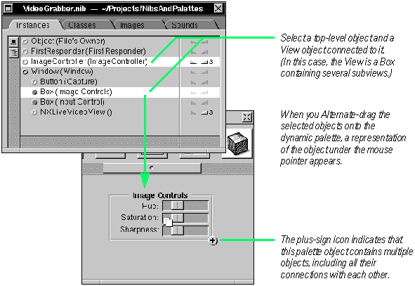 Tip: A useful selection technique is to first click a View object in the interface, then choose Enter selection from the Edit menu. The View object become highlighted in outline mode. Because you can only store one View object per top-level object with this technique, you first might want to group all View objects you want stored (if they're not already grouped). To make a group, select all the objects and then choose Group from the Group submenu of the Format menu. If you don't want the enclosing box around the grouped objects, remove the Bordered option in the Inspector's Attributes display for Boxes. If you want, verify the objects you stored using this technique. Drag the View object (with plus sign) that represents the combined objects from the dynamic palette and drop it over a new window or panel. Go to outline mode of the Instances view. The top-level and View objects you dragged off the palette are listed in the outline. Click the triangle button to verify that the connections are still there. 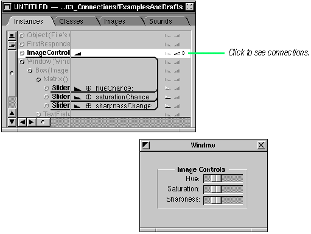 |
| MANAGING PALETTES |
| Customize the palette icon: Drag and drop an image file over the palette. | ||
| Install and deinstall palettes: Double-click a palette icon in the Palettes display of the Preferences panel. | ||
| Load a palette: Choose Open from the Palettes menu and select a palette file. | ||
| Unload a palette: Alternate-drag a palette icon off the Palettes display of the Preferences panel. |
| Interface Builder gives you facilities for managing static and dynamic palettes. These management functions include: |
| Customizing the palette icon (dynamic palettes only) | ||
| Installing and deinstalling palettes on the Palette viewer | ||
| Unloading and loading palettes (as user preferences) |
| Customizing the Palette Icon For dynamic palettes, Interface Builder gives you the option of specifying the icon that identifies the palette in the Palette viewer. 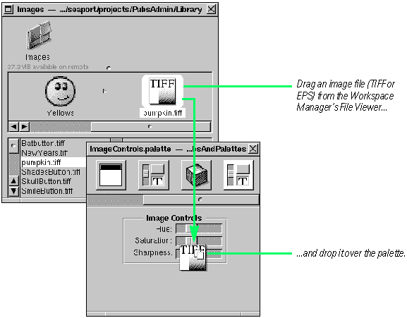 Tip: Since Interface Builder scales the image to fit into the icon rectangle, create or choose a TIFF or EPS image that is close to the standard size of icons. You can also customize the icons of static palettes, but you must do this programmatically, specifying the image file in a palette.table file. Installing and Deinstalling Palettes 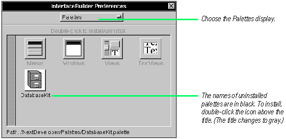 To deinstall palettes, double-click a palette icon when the name of the icon is in gray. Or you can deinstall a palette using the Palettes menu's Close command. 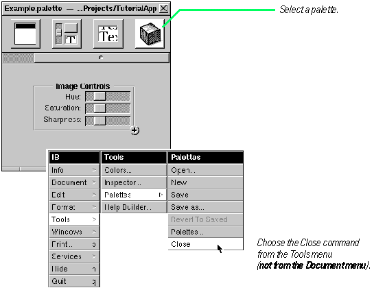
Loading and Unloading Palettes 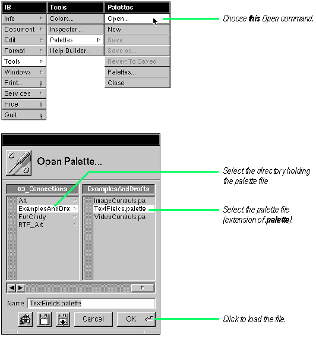 You can also load palettes by dragging them from the Workspace Manager's File Viewer onto the Palettes Preferences panel. You unload palettes--thereby removing from your user preferences--by Alternate-dragging them off the Palettes display of the Preferences panel. |